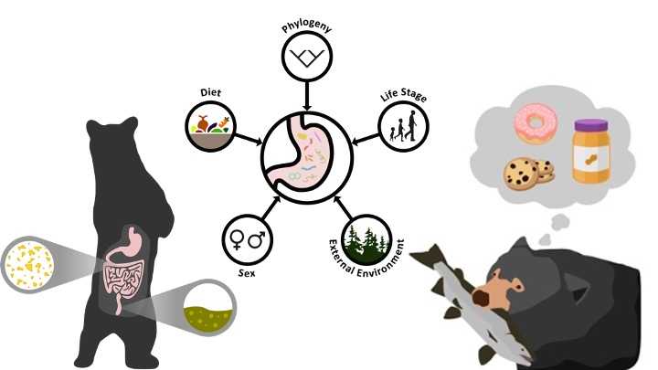
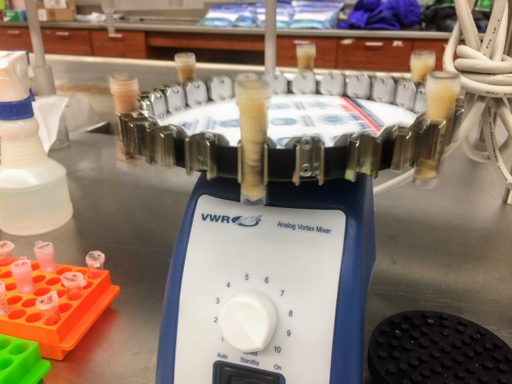

Ph.D.
With Puget Sound being the second largest estuary in the US with a wide range of habitats, nutrient rich waters, diverse wildlife, and expansive shoreline, its ecological and economic importance to Washington is unparalleled. With an increase in human activities, extreme weather events and the continued decline of many marine mammal and seabird populations, continued work that applies research to support conservation and management is critical to marine ecosystems. For my dissertation, I am working in collaboration with Washington Department of Fish and Wildlife to build Wall-to-wall predicted density surfaces for marine bird species in US portion of the Salish Sea with the use of hierarchical distance models to create maps depicting marine bird and mammal densities by season to help identify hots-spots, cold-spots and intermittent cold/hot-spots of community density. I am further aiming to aiming to conduct population viability analysis for Marbled Murrelet in the Salish Sea.
M.S.
The gut microbiome (GMB), a community of microorganisms within the gastrointestinal tract (GIT), is critical for nutrient uptake and immune system function. While most GMB studies focus on the colon due to ease of sample collection, in omnivores and carnivores like American black bears (Ursus americanus), nearly 90% of nutrient absorption occurs in the jejunum, a less-explored section of the GIT. For my first research chapter, I compared microbial communities in the jejunum and colon of wild black bears harvested in Michigan’s Upper Peninsula. Using 16S rRNA sequencing, we found significant differences in microbial diversity and composition between these regions (Gillman et al., 2020).
GMB diversity in mammals is influenced by factors such as habitat and sex, but diet is a key driver of structure and function. Human-provisioned foods, such as bait used during black bear hunting, can disrupt natural food webs and alter GMB diversity. In the second chapter of my master’s research, I combined 16S rRNA sequencing and stable isotope analysis to quantify the relationship between diet composition and GMB diversity. Bears consuming higher proportions of human-provisioned foods exhibited reduced microbial diversity, highlighting potential health consequences of human-mediated dietary shifts (Gillman et al., 2021). Collaborating with hunters, guides, and wildlife managers, I collected region-specific GIT samples to assess how human-provisioned foods impact microbial communities along the GIT.